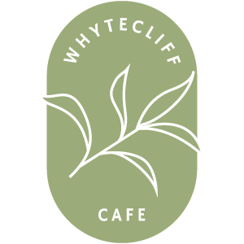

Capstone Project
Project Overview
Whytecliff Cafe is a fictitious plant-forward restaurant who recently opened a second location and want a new website to showcase their food and atmosphere of the restaurant through the use of photography. The client wanted the design of the site to match their restaurant, which falls between fine dining and casual dining.
For this project, I worked in a team of four to develop a fully functional multi-page website built on the WordPress CMS platform. I took on the role of designer, but assisted with the development of the site in the planning and styling stages.
Tools Used
Design


Development


Role(s)
UI Designer, Front-End Web Developer
Project Announcement & Discovery Meeting
After receiving the project brief, my team and I began researching existing restaurants for inspirational examples for website design and structure, as well as potential competition of the business. Once we had done extensive research, we prepared questions to ask our client in order to learn more about the project's requirements during the discovery meeting.
Memo of Understanding & Project Management and Communication Plan
After the discovery meeting was conducted, a memo of understanding was written to summarize the initial project requirements and any additional information provided by the client during the meeting - to be reviewed and approved by the client. Concurrently, a project management and communication plan was produced to outline the tools to be used for task management, communication, and project team member roles.
Content Planning
Following the discovery meeting, our team moved onto the content planning phase. As a team, we planned out all the content that would be on the website in the form of a content plan and information architecture. Based on the approved content plan and information architecture, I helped produce mobile and desktop wireframes using Adobe XD. I was also responsible for image sourcing and creating a style guide for our team to reference during the styling stage.
After the wireframes had been approved, the development team proceeded to write a detailed development plan of the site.
Color Palette
The colors used throughout the website matches the color scheme of the physical locations, which is presently a natural, earth tone palette with pops of terracotta and greens.
#E6D8C5
#A16E5C
#AAA87C
#696E61
Logo
The logo represents the restaurant's commitment to plant-foward meals made from fresh, locally-sourced ingredients. It was also inspired by the idea that many restaurants use a leaf icon to represent which items on their menu are vegan/vegetarian friendly.
Typography
Montserrat was used for headings and Roboto was used for body and button text for its readability at different screen sizes.
Mockups
After the high-level wireframes were completed and reviewed for changes, high-fidelity, functional mobile and desktop prototypes were created using Adobe XD.
Development Role
During the development stage I worked in a collaborative team of four to develop a functional, responsive website using WordPress and Sass. As I was part of the design team, my focus was on styling and some troubleshooting during this stage.
Development Setup
A subdomain for our project had already been created by our instructor, as well as a private GitHub repository. Prior to beginning work on the site, we met with our instructor for a development setup meeting to ensure all team members were properly set up on our local and live work environments.
Development & Workflow
The development team started the project by entering all of the code content and functionality using PHP. Then, after the functional site was completed, we met as a group to set up any Sass variables, mixins, partials, and any other known components before dividing up the remaining tasks. We styled with a mobile-first approach, with media queries to accomodate responsive design for different screen sizes.
We used GitHub for version control, which was an intrical part of our workflow. Any changes in our code or styles were uploaded using an FTP (file transfer protocol) platform. After the content was uploaded to our live site, we migrated the changes to our local servers using a WP Migrate plug-in.
Project Management & Communication
As this entire project was done remotely, our team maintained regular communication via Slack as well as consistent status meetings over Zoom so that we could discuss our progress or troubleshoot any problems together. I took the initiative to set up a project cloud storage for file collaboration and storing/sharing files, in addition to a shared spreadsheet containing an organized list of all our documents to manage project deadlines, assigning project owners, tracking tasks, and resources.
One of the things that went really well during the project was that we had all worked together before, and formed a group knowing that each team member had different strengths and skill sets. I feel that we were all able to maximize our existing skills, but also learn things from each other along the way. Even though we had our own tasks (and even other projects) to work on, the team was very collaborative and willing to lend a helping hand when any questions or problems arose.
All of the planning that was done before building the website played an integral role in streamlining our process. Creating a detailed content plan, information architecture, wireframes/prototypes, and development plan took time, but the result made the development stage a lot easier as everything was already laid out. It is easy to see why these steps should not be skipped or brushed over for future projects.
My biggest takeaway from this project is the importance of communication when working in a team, as it is with most collaborative projects. Since the project was done completely remote, we not only had to demonstrate excellent verbal, written, and listening skills, but also practice emotional awareness and management.
All in all, it was a good learning experience and I got a lot of practice with styling WordPress sites. As much as I enjoy taking a designer role, I would like to challenge myself with taking on more development tasks and doing more coding with PHP if I have the opportunity to work on another WordPress project in the future.